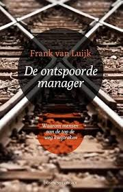

SMART methode
- Specifiek: Het boek de ontspoorde manager van Frank van Luijk lezen.
- Meetbaar: Ik heb een boekverslag gemaakt
- Acceptabel: Het boek gaat over bedrijfspsychologie en de docent vond het goed.
- Realistisch: Door een boek over het ontsporen van managers te lezen leer je over een onderdeel van bedrijfspsychologie.
- Tijdgebonden: Leerdoel moest af zijn op 18 februari 12:00.

Bewijslast
Dit boek heb ik uitgewerkt door middel van een essay waarin ik mijn mening geef over het boek.
De revieuw is te vinden op deze link
STARR-Reflectie
- Situatie: Een leerdoel uitwerken voor PLO
- Taak: Het boek de ontspoorde manager van Frank van Luijk lezen.
- Actie: Het boek is gelezen en het boekverslag is gemaakt.
- Resultaat: Geleert over de redenen van het ontsporen van managers.
- Reflectie: Ik vond het geen heel goed boek voor een bedrijfskundig student.